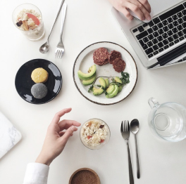
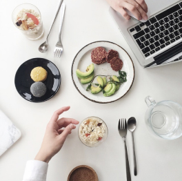

My Story
Elena Morell was born 29 January 1982 in Frankfurt, Germany. As an orphan, during her early childhood, she often ended up in Bavarian foster care systems. Eventually, Elena Morell was able to graduate high school in Munich, where she would work as a circus magician's assistant for three years. At the age of twenty while walking down the street, Elena Morell was asked by a photographer if she ever thought about having a modeling career. Elena Morell decided to give modeling a chance and moved to Paris where she had a successful modeling career for ten years. However, Elena Morell felt that as a model, she did not have the freedom to decide where her or how image would be used.


 
